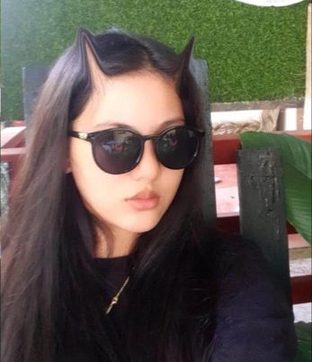

About Me
Sophia Yvonne Gandionco
Hello, my name is Sophia Yvonne Gandionco, and I am a technical professional with a passion for photography, web design, and Photoshop. I have honed my skills through years of education and hands-on experience, and I am always looking for new ways to push the limits of my craft. My love for photography began in high school, and I have since worked on a wide variety of projects, including weddings, events, and landscapes. I am skilled in both traditional and digital photography, and I am always eager to experiment with new techniques and technologies. In addition to photography, I am also an experienced web designer. I have a keen eye for design and an extensive knowledge of front-end development. I am proficient in HTML, CSS, JavaScript, and jQuery, and I am always looking for ways to optimize user experience through responsive design and mobile-first development. Finally, I am an expert in Photoshop. I have years of experience using this powerful tool to enhance photographs, create digital art, and design stunning visual layouts for websites and other digital media. Outside of my work, I enjoy exploring new places, trying new foods, and spending time with my loved ones. I am excited about the endless possibilities that the future holds for me in the field of photography, web design, and Photoshop, and I can't wait to see what challenges and opportunities lie ahead.
Email: gandionco.sophiayvonne10@gmail.com
Phone: 093558843521
Technical Skills
Photography
Web Design
Photoshop
Contact Me
Do you want me to photograph you? Fill out the form and fill me in with the details :) I love meeting new people!